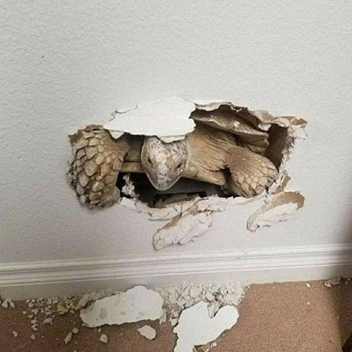

  <div class="prj-info">
    
    <p class="prj-title">소고가 된 눈사람</p>
    <p class="prj-info-txt">크리스마스 하나도 기대 안되긴 했지만, 이런 건 또 만들어봄</p>
    <p class="pattern-from">도안 출처</p>
    <p class="start-date">시작 날짜</p>
    <p class="finish-date">완성 날짜</p>
  </div>
  <div class="record">
    <span>매일 뜨기 (000)</span>
    <ul class="record-list">
      <li class="record-item">
        <a href="#"><span>플젝명</span><span>날짜</span><p>제목</p></p></a>
      </li>
      <li class="record-item">
        <a href="#"><span>플젝명</span><span>날짜</span><p>제목</p></p></a>
      </li>
    </ul>
  </div>
